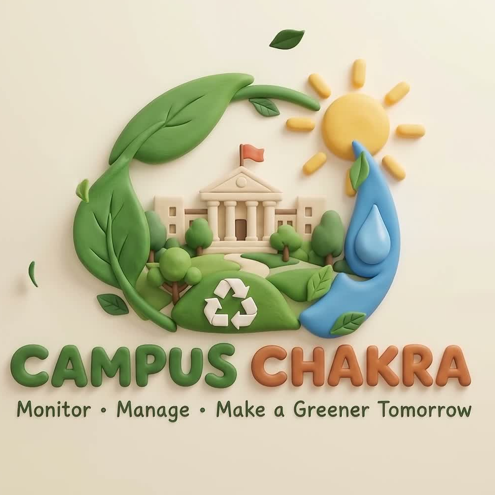

Inspect
Review campus energy, water, solar, waste, diversion, cost, and carbon across eight buildings.

CAMPUS CHAKRAOpen dashboard →Use this short route before exploring the live operational grid. Each feature accepts the supplied campus benchmark structure and makes its result transparent.
Review campus energy, water, solar, waste, diversion, cost, and carbon across eight buildings.
Upload CSV/XLSX waste or telemetry files to run live classification and forecasting.
Inspect data integrity, edge buffering, anomaly evidence, and grounded action recommendations.